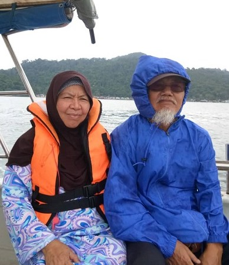
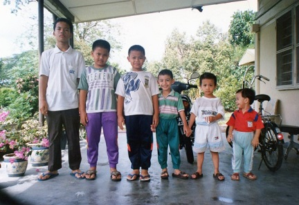

| BIODATA | EXPERIENCE | EDUCATION | FAMILY | GALLERY | FRIENDS | CONTACT |
Hi everyone! Welcome to my own space!
Here I tell everything about me *if you want to know them hehe*
So feel free to read if you want and interested to do so ❤️
Telling some stories here, I'm just a normal girl who have a normal life like everyone but I have to admit sometimes I'm not normal (which I usually get hype a lot and emosional HAHAHA) I'm 20 years old now, and I'm still struggling for my Diploma in UiTM Kedah. Alhamdulillah everything went well now but sometimes having stress is normal too right eventhough we're at home so I guess there's nothing to say about it, everyone felt the same thing HAHAHA okay so you can know me more by reading my biodata as I tell directly about me there. For my website, I use the theme of pastel colors because I like soft colors especially pink and that I think soft colors suits my website. Have fun in my website! ❤️
|  An appreciation post I should have made is supposed to be for my parents. They have sacrifies everything they could have done for their children. I am beyond grateful for that. Now that I am 20 years old, I just want to make my parents happy with everything I do. I just want to give them happiness like what they are doing to me right now. I want to be successful in everything I do and give them the best I could. I want to be a lecturer and give them monthly presents like every child is doing right now. I really want to make them happy in life ❤️ May Allah give me the chance to do everything for my parents ❤️ |
|  Next appreciation post is to my six brothers. I am thankful for having all six of you eventhough you guys are annoying when I was small but as I grow older, I love my brothers so much and thank you for being there with me when I need you. I am thankful that I have such understanding brothers that helps me whenever I need them (but I don't use them for purpose okayyyyy, I'm a good little sister 😜 Hehe, also I wanna thank them a lot for giving me 5 sisters-in-law where I get the chance of knowing them and knows how it feels like to have a sister ❤️ Thankyou brothers! Your lil sister just love you so much! ❤️ |